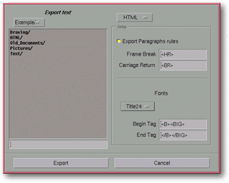

<!-- Documentation Xclamation (c)1994-2000 AXENE contact axene@axene.org>
<html>

<head>
<title>Text Exportation</title>
</head>

<body BGCOLOR="#FFFFFF" BACKGROUND="Images/back.gif" TEXT="#000000">

<p ALIGN="right">  </p>

<p><br>
<br>
The Text Exportation file selector selects the file to which the contents of the text
editor will be saved. This selector can only be opened from the <i>&quot;<a HREF="Box_Editor.html#options_menu">Options</a> / <a HREF="Box_Editor.html#export_text_menu_entry">Export text...</a>&quot;</i> menu in
Xclamation's Text Editor. <br>
<br>
</p>

<hr>

<p align="center"><br>
 <br>
<small><i>Screen shot: File selector text exportation </i></small></p>

<p><br>
</p>

<hr>

<p><br>
</p>
<a NAME="left_part">

<h3>Left portion of the file selector:</h3>

<p>Looks and works just like a </a><a HREF="Box_File_Selectors.html#file_selector">standard
file selector</a>. </p>

<p><br>
</p>

<h3>Right portion of the file selector:</h3>

<ul>
  <li><a NAME="format_list">A roll-down menu <b>selects the format of the text to be exported</b>.
    The three available formats are: Xclamation (internal enriched format), ASCII (ISO Latin
    1) and HTML (Hypertext Markup Language). When Xclamation is the selected format, the
    &quot;.xct&quot; extension is automatically added to the filename; only files having this
    extension will be displayed. For HTML format, the automatic extension is &quot;.html&quot;
    and the file menu only contains &quot;.htm&quot; and &quot;.html&quot; extensions.
    Choosing a format modifies the <i>&quot;Configuration&quot;</i> section of the file
    selector. Only the HTML format requires configuration parameters to be set. </a><br>&nbsp;</li>
  <li><a NAME="export_ruler_button">The <i>&quot;Export Paragraphs rules&quot;</i> button
    determines if the <b>paragraph format specifications</b> will be used in the destination
    file. The format alignment options (left, right, centered, and justified) will be
    recovered from the text and exported in HTML if this button is engaged. </a><br>&nbsp;</li>
  <li><a NAME="frame_break_textfield">The <i>&quot;Frame Break&quot;</i> text field selects
    the HTML tag to <b>replace frame breaks</b> in the exported file. </a><br>&nbsp;</li>
  <li><a NAME="carriage_return_button">The <i>&quot;Carriage Return&quot;</i> text field
    selects the HTML tag to <b>replace returns</b> (paragraph changes) in the exported file. </a><br>&nbsp;</li>
  <li><a NAME="font_list">The <i>&quot;Association of font styles&quot;</i> roll-down menu
    displays the font style list for the document containing text to be exported. Its contents
    depend on the font styles created in the '</a><a HREF="Box_Font.html">Font Style
    Composition</a> dialog box. Choosing a style from the list modifies the contents of the
    two text fields below which <b>define the beginning and end tags</b> associated with that
    style. The end tag of the preceding style and the beginning tag of the new style will be
    added to the destination file for all style changes of text to be exported. The beginning
    and end tags are automatically generated to be as similar as possible to the
    characteristics of the selected styles. <br>&nbsp;</li>
  <li><a NAME="tag_beginning_textfield">The <i>&quot;Begin Tag&quot;</i> text field selects
    the HTML tag to be added to the file upon each change of font in the text in order to
    apply the style selected from the list. </a><br>&nbsp;</li>
  <li><a NAME="tag_end_textfield">The <i>&quot;End Tag&quot;</i> text field selects the HTML
    tag to be added to the file upon each change of font in the text in order to replace the
    style selected from the list. </a><br>&nbsp;</li>
</ul>

<p><br>
</p>

<h3>Lower portion of the file selector:</h3>

<ul>
  <li><a NAME="button_export"><i>&quot;Export&quot;</i> exports the text contained in the text
    editor in the selected format to the chosen file and closes the selector. </a><br>&nbsp;</li>
  <li><a NAME="button_cancel"><i>&quot;Cancel&quot;</i> closes the selector without exporting.
    </a><p><br>
    </p>
    <hr>
    <p ALIGN="right"></p>
  <br>&nbsp;</li>
</ul>
</body>
</html>
